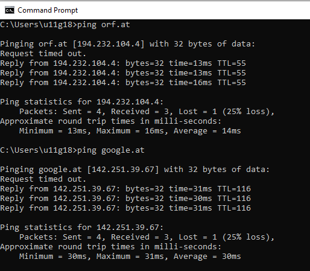
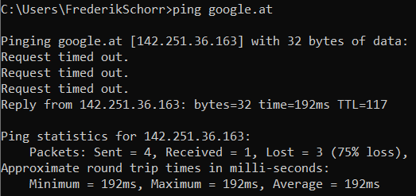

Meine Internet Verbindung via UPC Kabel - Internet Fiber Box ist seit einigen Tagen so schlecht, dass ich nicht mehr normal arbeiten kann. Das Problem ist NICHT die Bandbreite sondern der Verbindungsaufbau - der immer sehr lange dauert. Merkt man sofort beim Laden einer beliebigen Website, Bilder kommen anfänglich nicht, dann sehr schnell. Bei Webapplikationen noch problematischer, Trello glaubt immer wieder ich bin offline, ebenso MS Teams, andere Applikationen loggen mich aus weil der Single-Sign-In ein Timeout liefert. Sobald zB Teams eine Videoverbindung aufbauen kann, hält diese recht stabil.
Ich kann diese Verbindungsprobleme messen und nachweisen, siehe Anhang. Verwende dazu ein einfaches Speedmeter, welches neben Download/Upload Mbps auch die RTT (Round Trip Time of a ping data packet) in ausweist. Bei funktionierender Kabel-Internet-Verbindung beträgt der RTT bei mir 40-50ms (via WLAN). Derzeit beträgt der RTT meistens 140-200ms (mittels LAN-Kabel direkt in Router; untere gelbe RTT Messwerte im Anhang) und das Arbeiten mit Webapplikationen ist kaum noch möglich (man sieht in der Messreihe auch stark schwankende Download/Upload Mbps). Wenn ich umschalte auf Handy-Hotspot beträgt der RTT zw 60-80ms (obere grüne RTT Messwerte im Anhang) und ich kann wieder normal arbeiten.
Habe bereits 4x mit Magenta Serviceline telefoniert. Daraufhin habe ich gestern neue "Internet Fiber Box" von Magenta Shop geholt, leider nur kurze Verbesserung, seit heute Do morgen wieder unverändert schlechte Verbindung. WLAN kann auch ausgeschlossen werden, Verbindung mit LAN-Kabel genauso schlecht, siehe obige Testreihe.
Any Tipps woran das liegen könnte? Danke lg Frederik
Hallo @frederik ,
die Ursache kann an verschiedenen Stellen zu finden sein. Nutzt du hinter dem Magenta Modem einen eigenen Router? Ist dein Modem mit einem weißen oder schwarzen Antennenkabel verbunden? Wie viele Geräte greifen auf das Internet zu? Welchen Tarif hast du? Bei welchen Webseiten merkst du diese Einschränkungen? Liebe Grüße, Jonathan
Guten Morgen,
ich hab ebenfalls exakt die gleiche Problematik seit einige Tage, dachte zuerst an ein DNS Thema, welches ich mittlerweile auschließen kann.
Ich werden nur den Magenta Router. Man merkt es, wie Frederik sagt, speziell im Browser, hier sieht man dann immer wieder Connecting links unten und die Seite lädt nicht oder unvollständig.
Unabhängig vom Client, egal ob WLAN oder LAN
Man sieht es recht einfach mit Ping, dass der erste Ping reproduzierbar verloren geht

Ich hab keine Idee mehr wie ich das weiter eingrenzen könnte.
Lg
Am 1/19/2022 um 06:52 schrieb Philipp_:Guten Morgen,
ich hab ebenfalls exakt die gleiche Problematik seit einige Tage, dachte zuerst an ein DNS Thema, welches ich mittlerweile auschließen kann.
Ich werden nur den Magenta Router. Man merkt es, wie Frederik sagt, speziell im Browser, hier sieht man dann immer wieder Connecting links unten und die Seite lädt nicht oder unvollständig.
Unabhängig vom Client, egal ob WLAN oder LAN
Man sieht es recht einfach mit Ping, dass der erste Ping reproduzierbar verloren geht
Ich hab keine Idee mehr wie ich das weiter eingrenzen könnte.
Lg
Hallo Philipp, danke für Feedback und ping Analyse.
Bei mir ebenfalls oftmalige ping Aussetzer beim ersten Mal, dann funktioniert es wieder, siehe Screenshot anbei:

Die Internet Fiber Box habe ich zuvor auf Werkseinstellungen zurückgesetzt, und bin direkt mit Ethernet Kabel angeschlossen.
Bin ratlos und brauche dringend Unterstützung von Magenta Kundenservice.
mfg Frederik
Am 1/17/2022 um 16:14 schrieb Jonathan Dorian:Hallo @frederik ,
die Ursache kann an verschiedenen Stellen zu finden sein. Nutzt du hinter dem Magenta Modem einen eigenen Router? Ist dein Modem mit einem weißen oder schwarzen Antennenkabel verbunden? Wie viele Geräte greifen auf das Internet zu? Welchen Tarif hast du? Bei welchen Webseiten merkst du diese Einschränkungen? Liebe Grüße, Jonathan
Hallo Jonathan,
ich verwende eine ganz neue Internet Fiber Box (also das Kabelmodem von Magenta, vormals UPC) und sonst gar nichts. Das UPC Kabel (für Kabelfernsehen und Kabelinternet) ist weiss. Mittlerweile greife ich mit einem einzigem Laptop via Ethernet auf das Modem zu, dieses habe ich heute nochmals auf Werkseinstellungen zurückgesetzt und dann 1min vom Strom genommen. Tarif: Internet Fiber 150. Einschränkungen bei ALLEN Websiten & -Applikationen, siehe Beschreibung oben - ist leider immer noch unverändert schlecht wie letzte Woche beschrieben.
Befürchte ich brauche Analyse & Behebung von Magenta Servicetechniker?
Danke Frederik
Nochmals Magenta Serviceline angerufen, ein sehr kompetenter Mitarbeiter: offenbar ist in meiner Kabeldose nur noch ein sehr schwaches Signal, im Hausverteiler im Keller ist das Signal noch normal gut. Er hat Technikertermin vereinbart - endlich.
@Philipp: werde Update geben nach Technikerbesuch.
mfg Frederik
Ich hab heute auch die Serviceline angerufen und bekam also Auskunft, dass mit 13 aktiven Geräten durchaus meine 75Mbit zu wenig sein können. Die Qualität der Leitung passt angeblich.
Dass der Großteil davon IOT Devices, wie Staubsaugroboter, Klimaanlage und Haussteuerung sind, konnte ich dem Herrn an der Hotline nicht glaubhaft vermitteln. Ich hab ja auch kein Bandbreiten Thema sondern Ausfälle.
Ich hab das heute nochmals weiter untersucht, wenn Richtung Internet nichts mehr geht, geht auch kein ping mehr aufs Modem mit der 192.168.0.1 bzw kommt man auch nicht aufs Webinterface.
Wäre auch für Tipps dankbar.
Hallo Philipp,
gestern war Magenta Techniker da, sehr kompetent. Alte Kabeldose usw ausgetauscht, durchgemessen, hat alles in Ordnung ausgesehen. Dann das Kabelmodem = Internet Fiber Box ausgetauscht, seit dem funktioniert alles wieder.
Eigenartig ist aber, dass ich auf Anraten der Hotline bereits vor 10 Tagen die Fiber Box ausgetauscht hatte (bin zu einem Magenta Shop gefahren). Danach ging es ein paar Stunden, am nächsten Morgen wieder genauso schlecht. Diesmal (mit der dritten Fiber Box) habe ich vorsichtshalber auch neue WLAN Passwörter verwendet (statt unserem schwachen "Familien-Passwort"). Bin abschliessend nicht sicher was die Lösung war, hoffe aber es hält.
Dir auch viel Erfolg, lg Frederik
{kind=link}
{kind=link}